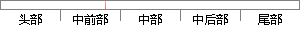

Sigmoid函数将输入为实值的数压缩到0~1的范围内，较大的负数被映射成0，较大的正数被映射成1，Sigmoid函数在历史上流行过一段时间，因为它能够很好表达“激活”的意思，未激活为0，完全的饱和激活就是1。
片段位置图

相似结果|
1
原句片段：Sigmoid函数将输入为实值的数压缩到0~1的范围内，较大的负数被映射成0，较大的正数被映射成
相似片段 1：sigmoid 函数输入一个实值的数, 然后将其压缩到0~1 的范围内。特别地,大的负数被映射成0,大的正数被映射成1,未激 活就是0,完全饱和的激活则是1。 二、...
相似片段 2：sigmoid 函数输入一个实值的数,然后将其压缩到 0~1 的范围内。特别地,大的负数被映射成 0,大的正数被映射成 1,未激活就是 0,完全饱和的激活...
相似片段 3：之前我们说过,sigmoid函数输入一个实值的数,然后将其压缩到0~1的范围内。特别地,大的负数被映射成0,大的正数被映射成1。sigmoid function在历史上流行过一段...
相似片段 4：Sigmoid 非线性激活函数,sigmoid函数输入一个实值的数,然后将其压缩到0~1的范围内。特别地,大的负数被映射成0,大的正数被映射成1。...
相似片段 5：之前我们说过,sigmoid函数输入一个实值的数,然后将其压缩到0~1的范围内。特别地,大的负数被映射成0,大的正数被映射成1。sigmoid function在历史上流行过一段...
相似片段 6：之前我们说过,sigmoid函数输入一个实值的数,然后将其压缩到0~1的范围内。特别地,大的负数被映射成0,大的正数被映射成1。sigmoid function在历史上流行过一段...
相似片段 7：之前我们说过,sigmoid函数输入一个实值的数,然后将其压缩到0~1的范围内。特别地,大的负数被映射成0,大的正数被映射成1。sigmoid function在历史上流行过一段...
2
原句片段：1，Sigmoid函数在历史上流行过一段时间，因为它能够很好表达“激活”的意思，未激活为0，完全的饱和激活就是1。
相似片段 1：之前我们说过,sigmoid函数输入一个实值的数,然后将其压缩到0~1的范围内。特别...function在历史上流行过一段时间因为它能够很好的表达“激活”的意思,未激活就是...
相似片段 2：之前我们说过,sigmoid函数输入一个实值的数,然后将其压缩到0~1的范围内。特别...function在历史上流行过一段时间因为它能够很好的表达“激活”的意思,未激活就是...
相似片段 3：之前我们说过,sigmoid函数输入一个实值的数,然后将其压缩到0~1的范围内。特别...function在历史上流行过一段时间因为它能够很好的表达“激活”的意思,未激活就是...
相似片段 4：标签: 激活函数 / relu / sigmoid / tanh / 20208 编辑 删除 本...function在历史上流行过一段时间因为它能够很好的表达“激活”的意思,未激活就是...
相似片段 5：之前我们说过,sigmoid函数输入一个实值的数,然后将其压缩到0~1的范围内。特别...function在历史上流行过一段时间因为它能够很好的表达“激活”的意思,未激活就是...
相似片段 6：之前我们说过,sigmoid函数输入一个实值的数,然后将其压缩到0~1的范围内。特别...function在历史上流行过一段时间因为它能够很好的表达“激活”的意思,未激活就是...
|
※ 片段修改建议 ※
近似词参考：- 压缩：紧缩
- 映射：映照
- 映射：映照
- 流行：风行 盛行
- 因为：由于
- 能够：可以或许
- 完全：彻底 完整
- 就是：便是
系统自动生成语句：Sigmoid函数将输入为实值的数紧缩到0~1的范围内，较大的负数被映照成0，较大的正数被映照成1，Sigmoid函数在历史上风行过一段时间，由于它可以或许很好表达“激活”的意思，未激活为0，彻底的饱和激活便是1。
注：本片段修改建议为系统自动生成，仅供参考。